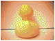

Fun Stuff
Check out our blog!

Odie found a cute egg somewhere, but poor Odie forgot where it is! Can you find it for him?
Apr 3, 2023
Odie Meets Mittens
Mittens and Deal don't seem to get along with each other. But Odie shakes and nods his head toward Mittens, and likes the little pup, while inkie gets along with Deal.
Odie handstands, puppy! Mittens and Odie chase each other.
The next day...
Deal and Mittens seem to tolerate each other; Deal and Ruby love to play! Odie and I played tug of war for some time; Mittens was cheering on Odie, while Deal was cheering on me! In the end, Odie won. I played a game with Pinkie and I won. Pinkie and Deal had a staring contest.
Shrines:
None currently, check back soon! :D

My Breedfiles (feel free to edit 'em):
Cute Alien Dog
Wheatley
Bloo
Narrator
Check out these cool screenmates I made:
Pinkie Pie and Rainbow Dash - Made with the help of Zarla's guide :D Here's a download link to their balloon.
The Narrator - Made with the help of Zarla's guide :D Uses the Twinkling Galaxy Hues balloon by Zichqec.
ButtonToy - Made with the help of Zichqec's Simplicity Template :D Uses the Balloons balloon by Zichqec and Galla.

Cyberpets were really cool pets you could have online in the late '90s and early 2000s. They're actually the precursor to virtual pet sites like Neopets, Flight Rising, Poppy Seed Pets, and so on. (FR is my favorite pet site! I'm Redspike944 on there. I'm also Cucumber Alpha on Poppy Seed Pets; it's really cool, kinda like The Sims but with lil' critters instead). They were basically small pictures of cute animals (fantasy or real) you could have on your website. Some animated, some had lore, some were just plain ol' pictures, some used Flash (like BunnyHero Labs)... Some even grew! Some required filling out adoption forms to officially adopt; you couldn't just download 'em upload the picture to your site as the pix were watermarked. There was even an adoption certificate for each unique pet! People took it very seriously at the time. Some were not even pictures! Just poems of fortunes that animated (or didn't).
For pets that grew up, people sent in a form and got back either a seed or baby pet which 'grew up' on their website; each week the owner had to send an e-mail to the creator of the pet, who would then send the next image, and the owner could change it on their site. That way, each pet would grow up into a unique adult.
Alas, I never grew up with 'em as I was born after they stopped being as popular.
One of the most popular of these 'cyberpet agencies' in its heyday was Asynjur's Adoption Central (aka Bear Jests). They adopt out fantasy cyber pets, like the Suxen. But apart from that, they also have teddies and seals to adopt, so it's not all fantasy, and they have their own guide on how to start your own cyberpet agency!
As far as CAs go, this one is relatively lenient; all it asks you to do is credit 'em, copy the picture to your own server (at the time, this was a huge deal), only use it on kid-safe sites, and don't edit it.
Another one is BillyBear4Kids.org! They have Purp Beans and other fantastical creatures, but they also have teddies and rabbits. They also have desktop screenmates for your computer! There's even a Purp Bean screenmate :P
Their rules are also quite lenient - their only requirements are exactly the same as Bear Jests.
Without further ado...My cool cyberpets (seals, pet rocks, purp beans, hedgehogs, candycorns, and more!):
Bear Jests
Billy Bear's Playground
Woobie World
Rainbow Dash is my cute Woobie pony!

This is my cute teddy bear, Horris! I love to hug 'em all day. They go on adventures involving apple trees and treehouses ;)


"Hi... I am a boy HedgeHog. I am only 3 months old. I like to eat bananas... they are my favorite food!"
"Hi... I am a girl HedgeHog. I am only 2 months old. I like to eat blueberries... they are my favorite food!"


Apple, the bunny, loves to explore the house.
These lil' guys love to hop around and do good deeds for carrots, bananas, etc.


These cuties love to play hide-and-seek together. The stoat's name is Banana, and the seals' names are Strawberry & Mango.


That's all of 'em! Sadly, they faded away in popularity, but happily, sites like FR, Poppy Seed Pets, and Neopets exist so you can still have your own online virtual pets.
Check out Odie's Ocean for more fun, such as downloads, fanpages, etc!



Clipart Animations Copyright © Loraine Wauer Ferus